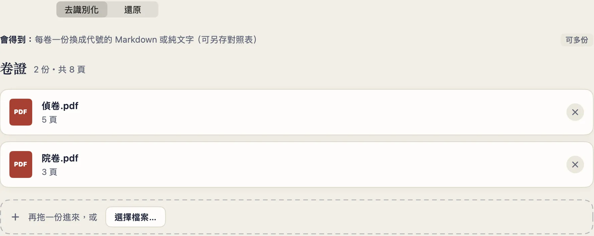
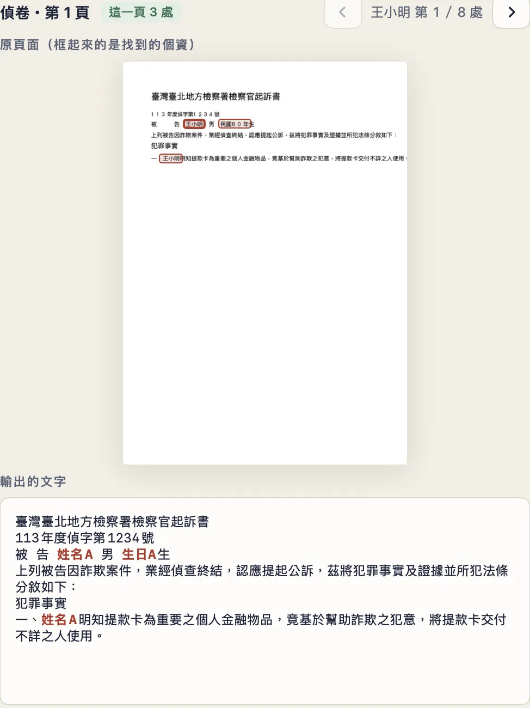
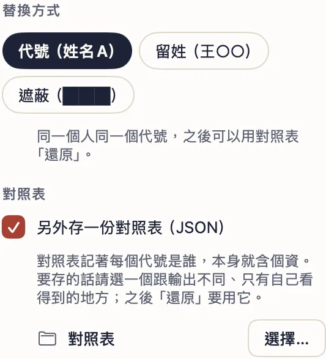
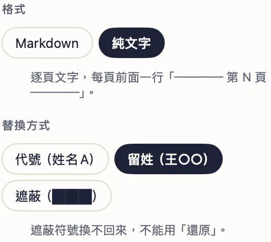

把卷證裡的個資換成代號：去識別化教學
要把卷證內容交給別人，或貼到 AI 工具整理之前，常常想先把當事人的個資拿掉。「去識別化」找出卷證裡的個資，讓你逐項確認，再輸出一份個資換成代號的文字檔。它找個資用的是規則和卷證的版式，一定會有漏，所以這篇會把確認的步驟和漏掉的情況寫得比較細。
這個工具做什麼、不做什麼
「去識別化」在首頁的「遞狀與交付」那一組。它做三件事：
- 在卷證裡找姓名、身分證字號、居留證號、電話、電子郵件、地址、出生年月日、銀行帳戶和車牌。
- 列成清單讓你逐項確認，勾著的才會換掉。
- 輸出一份文字檔，把勾選的個資換成代號，例如「王小明」換成「姓名A」、出生年換成「生日A」。
先說清楚它不做的事：
- 輸出的是換成代號的文字（Markdown 或純文字），不是塗黑的 PDF。原本的 PDF 不會被改動，也不會產生遮蔽過的 PDF。
- 找個資用的是規則與卷證的版式，例如「被告」「受詢問人」後面接著的名字、有固定格式的身分證字號與電話。不是 AI 模型，也不會連網。沒有固定格式的姓名與地址一定會有漏，所以輸出前要逐項確認，輸出後也要再看一次。
整個過程在這台裝置上處理，卷證不會上傳。
第一步：放入 PDF，開始找個資
點「去識別化」，畫面上方有「去識別化」與「還原」兩個分頁，先用「去識別化」。把卷證 PDF 拖進來，或按「選擇檔案…」。

- 放好後按右上角的「開始找個資」。畫面會顯示「正在找個資」與進度，可以按「停止」。
- 掃描頁要先辨識文字，比較久。閒置一陣子後第一次辨識，系統要先載入辨識功能，會多等十幾秒。
- 有開啟密碼的 PDF，放進來時會問密碼。
第二步：逐項確認要遮的項目
找完會進到「確認要遮的項目」。最上面有一條黃色提醒，每次都會顯示：「輸出的是換成代號後的文字檔（Markdown 或純文字），不是塗黑的 PDF。姓名與地址是用版式和詞表找的，可能有漏，漏掉的可以用「加入要遮的字」補上。」
左邊是找到的清單，一個名字（或一個號碼）一列。每一列依序是：勾選框、類別、找到的字、出現在哪幾頁幾處、怎麼找到的（規則、版式線索等）。
- 勾著的才會換掉。取消勾選就照原樣留著。
- 法官、檢察官、書記官、警員這類只以職務身分出現的名字，會列出但預設不勾，標註「職務人員，不遮」。要遮的話自己勾上。
- 同一個人不同寫法會當成兩個人。示範卷裡的「王小明」與「王曉明」會分到不同代號；簡稱（王員、王男）和綽號不會自動找到。
點一列，右邊顯示它出現的那一頁：上半是原頁面，找到的個資用框標出來；下半是這一頁換成代號後的文字，換掉的地方標成紅字。同一個名字出現好幾處時，用右上角的箭頭一處一處看。

下半的文字是這一頁讀到的文字；輸出 Markdown 時另外保留標題與表格，替換的方式相同。
漏掉的補上，不要遮的排除
清單上方有兩個按鈕：
- 加入要遮的字：輸入清單裡沒有的字，例如「王員」「阿明」。全卷每個出現的地方都會遮，比對時忽略空白、換行與全形半形。
- 不遮的名單：一行一個，例如法院、機關名稱或公開的人名。跟名單相同、或整段落在名單字串裡的，不會列出來。
翻原卷時看到清單沒列的名字、地址，就用「加入要遮的字」補上。確認完，按右上角的「下一步：輸出」，旁邊會寫「共 N 處會換成代號」。
第三步：選格式與替換方式
輸出步驟的左邊有「格式」與「替換方式」。
格式
- Markdown：保留標題、表格與頁碼註記（
<!-- page N -->），適合貼給 AI 工具。 - 純文字：逐頁文字，每頁前面一行「──── 第 N 頁 ────」。
替換方式
- 代號（姓名A）：各類別各自編 A、B、C…，同一個人同一個代號，跨卷也一樣。之後可以用對照表「還原」。
- 留姓（王○○）：姓名留下姓，其他字換成「○」。
- 遮蔽（███）：一律換成「███」。
留姓與遮蔽換不回來，不能用「還原」。之後要把 AI 工具的回覆換回真名，請選代號。
代號＋對照表

純文字＋留姓

對照表
選代號時，下面多一個「另外存一份對照表（JSON）」。對照表記著每個代號是誰，「還原」要用它。
- 對照表本身就含個資，預設不存。
- 勾了以後要按「選擇…」另選一個資料夾。請選一個跟輸出不同、只有自己看得到的地方；沒選位置前不能輸出。
- 對照表不會放進輸出的資料夾。之後把輸出的資料夾整個交給別人或 AI 工具時，對照表不會跟著出去。
不打算還原的話，可以不存。
輸出與自動檢查
右邊「按下去會產生這 N 個檔案」列出每卷的檔名、格式和要替換幾處。存了對照表時，清單裡也會列出對照表和它存的位置。
原檔名裡有個資時（例如「受詢問人王小明.pdf」），檔名裡的也會換成代號。
按「開始輸出 N 個檔案」。輸出完，App 會自動檢查一次：在輸出的文字與檔名裡，再找一遍勾選要遮的字串。
- 通過時顯示「自動檢查通過」與檢查了幾個字串。你自己取消勾選的地方照原樣留著，不算漏遮。
- 沒通過時顯示「請檢查：有個資可能沒遮到」，列出檔名、頁碼和殘留的字。勾了卻在輸出那一頁找不到的項目也會列出，請打開檔案確認。可以回上一步用「加入要遮的字」補上，再輸出一次。
- 自動檢查只找勾選過的字串。清單一開始就沒找到的個資，檢查也找不到。所以通過了，送出前仍請自己再看一次文字檔。
還原：把代號換回原文
把代號版交給 AI 工具整理後，回覆裡會是「姓名A」這類代號。切到上方的「還原」分頁，可以換回原文。
- 選對照表：按「選擇對照表…」，選去識別化時存的 JSON 檔。旁邊會顯示有幾個代號。
- 貼上含代號的文字：例如 AI 的回覆。
- 換回原文：右邊馬上顯示換回原文的結果，標出換回幾處。按「拷貝」複製。
貼上含代號的文字

換回原文
- 只有代號可以還原。留姓（王○○）與遮蔽（███）換不回來。
- AI 工具把代號改寫了（例如寫成「A 先生」）就換不回來。交給 AI 時，請它照原樣使用代號。
- 同一個人在卷裡有不同寫法（例如辨識讀錯的字）時，還原後都換成對照表裡的那一種寫法。
會漏掉的個資
下面這些情況，App 找不到或找不完整，請在確認那一步自己補：
- 沒有稱謂的人名：附表裡只寫名字的被害人、內文只提一次的關係人、假名。名字前面沒有「被告」「證人」這類稱謂，在別處也沒以稱謂出現，就找不到。
- 兩個字的名字：跟常見詞一樣的（例如「陳明」）不收。
- 簡稱與綽號：「王員」「王男」「王姓」、綽號不會自動找到。
- 格式不完整的地址與號碼：只寫到區（「臺北市大安區」）沒有門牌的地址、國字數字的生日、沒有區碼分隔又沒有欄位名的市話、護照號碼、健保卡號、統一編號都不抓。
- 文字辨識讀錯的字：掃描頁讀錯的名字只能找到讀錯的那個寫法；手寫、印章、很小的字和密集的表格基本上讀不到。掃描卷的表格，稱謂和名字可能對不起來。
- 不在頁面文字裡的：註解（便利貼）、表單欄位、文件資訊，以及頁面裡的圖片（例如貼上去的身分證影本）。這些內容也不會出現在輸出的文字裡。
反過來也會誤判，例如稱謂後面接一般句子、開頭字剛好是姓，或沒有欄位名的車牌格式。誤判的取消勾選即可。
在 iPhone・iPad 上
步驟相同。iPhone 上清單在上、頁面預覽在下，點一列往下看它出現的那一頁；「去識別化」「還原」的切換在標題下面。按鈕在畫面下方，輸出的檔案在「檔案 › 我的 iPhone › 審判工具箱」。細節在 iPhone・iPad 版的介紹。
做不到的事／要注意
- 不輸出塗黑的 PDF。要遞給法院或對造的 PDF 需要遮蔽時，請用其他工具處理並自行確認。
- App 列出的清單不是完整的個資清單。是否遮得夠，要由你逐項確認後判斷。
- Markdown 不取出圖片，圖片裡的個資沒辦法處理。
- 把代號版交給雲端 AI 工具，仍然是把卷證內容傳出這台電腦；是否符合保密義務，請自行判斷。
- 對照表含個資。存在哪裡、用完是否刪除，請自己管理。
要先把卷證轉成文字看看，用PDF 轉 Markdown。代號版做好後，交給 AI 工具的做法在交給 AI那篇。
常見問題
去識別化會產生塗黑的 PDF 嗎？
不會。輸出的是個資換成代號（或○、███）的文字檔，格式是 Markdown 或純文字。原本的 PDF 不會被改動。
自動檢查通過，就代表沒有個資了嗎？
不是。自動檢查只確認勾選過的字串沒有留在輸出裡。一開始就沒找到的個資（沒有稱謂的人名、只寫到區的地址、讀錯的字），檢查也找不到，送出前請自己再看一次。
為什麼還原沒有作用？
還原要用代號模式輸出時另存的對照表。選留姓或遮蔽輸出的，換不回來；AI 工具把代號改寫了的，也換不回來。